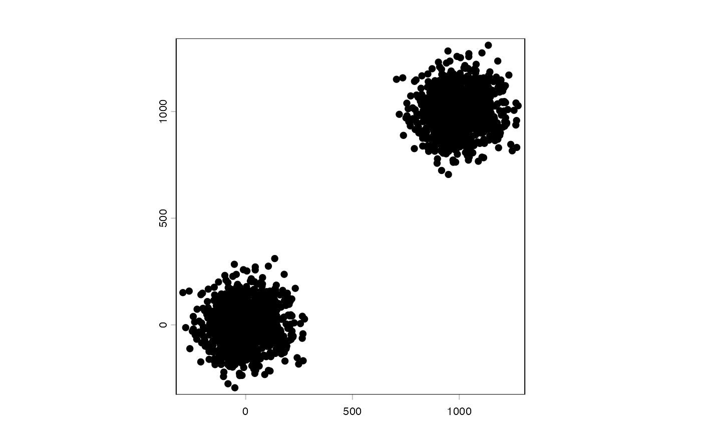
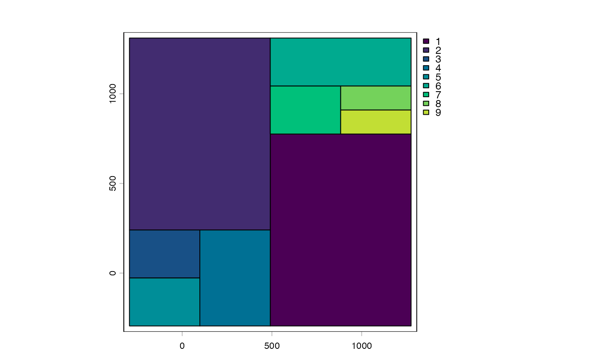
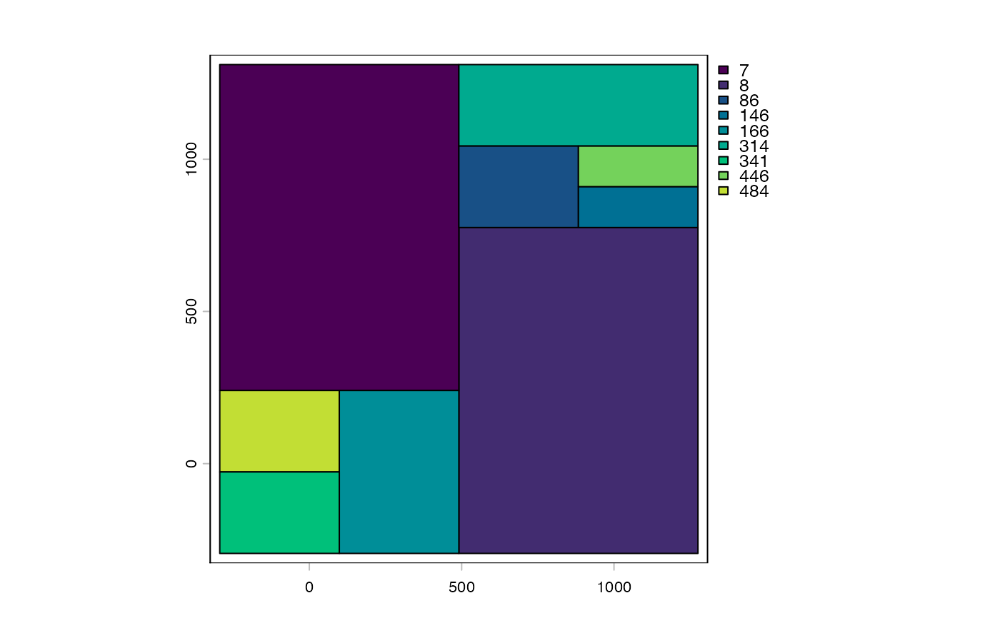

Iteratively subdivides a spatial extent into a freeTilePlan by running
FUN on each tile and splitting any tile whose value exceeds threshold.
Uses tileApply() internally so each pass can be parallelised via
future::plan().
FUN must return a single numeric scalar per tile — typically a point
count, density, or variance measure. Tiles are split into four equal
quadrants until all tiles are either below threshold or smaller than
min_tile_size.
quadtreePlan(
x,
tiles = NULL,
FUN = nrow,
threshold,
min_tile_size = NULL,
max_depth = 10L,
...
)input data (e.g. SpatVector or file path).
starting tilePlan. Defines the initial coarse grid.
function. Applied to each tile; must return a single numeric.
numeric. Tiles with FUN(tile) > threshold are subdivided.
numeric. Minimum tile side length (in CRS units). Tiles below this size are kept as leaves regardless of density.
integer (default 10L). Maximum subdivision depth.
additional params passed to tileApply().
A freeTilePlan with an n_records metadata column containing
the last FUN value for each leaf tile.
Other tile plans:
freeTilePlan,
freeTilePlan-class,
pixelTilePlan-class,
pointTilePlan-class,
spatialTilePlan-class,
tilePlan,
tilePlan-class,
tilework-class
# dummy data
pts <- terra::vect(cbind(x = rnorm(1000, 0, 100), y = rnorm(1000, 0, 100)))
pts <- rbind(pts, terra::shift(pts, dx = 1000, dy = 1000))
plot(pts)

# data must exist on disk
f <- tempfile(fileext = "shp")
terra::writeVector(pts, f)
pts <- terra::vect(f, proxy = TRUE)
fp <- quadtreePlan(pts,
threshold = 500L,
min_tile_size = 1
)
#> Warning: Your code is running sequentially. For better performance, consider using a
#> parallel plan like:
#> options("tilework.bpparam" = BiocParallel::SnowParam())
#> To silence this warning, set options("tilework.warn_sequential" = FALSE)
#> Warning: Your code is running sequentially. For better performance, consider using a
#> parallel plan like:
#> options("tilework.bpparam" = BiocParallel::SnowParam())
#> To silence this warning, set options("tilework.warn_sequential" = FALSE)
#> Warning: Your code is running sequentially. For better performance, consider using a
#> parallel plan like:
#> options("tilework.bpparam" = BiocParallel::SnowParam())
#> To silence this warning, set options("tilework.warn_sequential" = FALSE)
plot(fp)

# plot with items per tile
plot(fp, values = "n_records")
